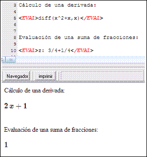

Uso:
<EVAL> Expresión simple en lenguaje Maxima </EVAL>
<EVAL> Variable: Expresión en lenguaje Maxima </EVAL>
Ejemplos:
<EVAL>diff(x^2+x,x)</EVAL> devuelve como resultado visible 2x+1
En este caso se evalúa la derivada de la función.
<EVAL>z: 3/4+1/4</EVAL> Define el valor 1 para z y devuelve como resultado visible 1
A partir de ese punto del documento la variable z tendrá el valor 1 (El nombre de la variable no se muestra).

Atajo: CONTROL + E
Información adicional: Sólo es posible incluir una única expresión Maxima dentro de esta etiqueta. Para procesar varias expresiones juntas de debe usar la etiqueta <HIDE>
Todas las expresiones incluidas en un EVAL son pasadas a Maxima con una evaluación extra.
Ejemplo:
<EVAL> sqrt(4) </EVAL> se enviará a Maxima: ev(sqrt(4),eval)
Esta evaluación extra es necesaria para que la extensión de la función tex a algunas operaciones como nroot (raiz n-ésima) o L (logaritmo en base arbitraria) funcionen correctamente.
Gracias a esto se consigue que:
<EVAL> nroot(3,x) </EVAL> devuelva x1/3
y
<MAT> nroot(3,x) </MAT> devuelva
Un inconveniente a tener en cuenta de esta evaluación extra es que determinadas operaciones como la descomposición en factores de una expresión se debe pasar dentro de un MAT en vez de un EVAL:
<EVAL> factor(6) </EVAL> devuelve 6
y
<MAT> factpr(6) </MAT> devuelve 2·3
Created with the Personal Edition of HelpNDoc: Easily create EPub books